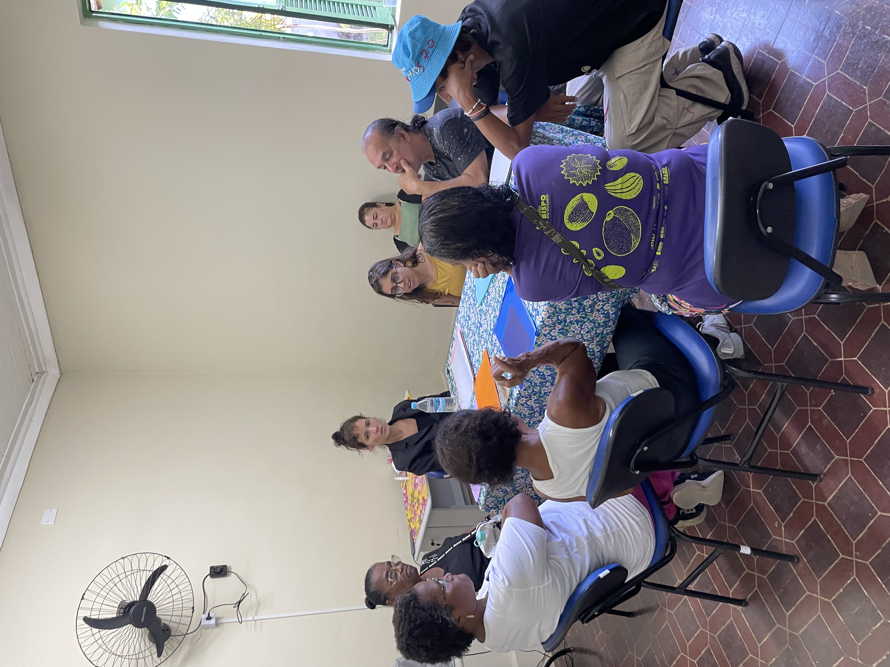
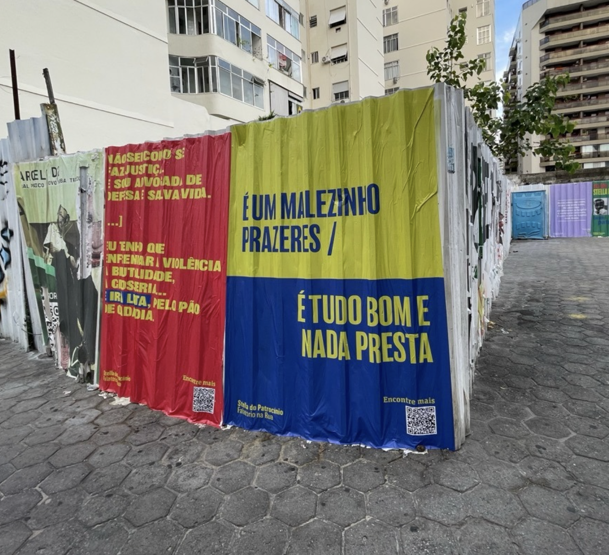
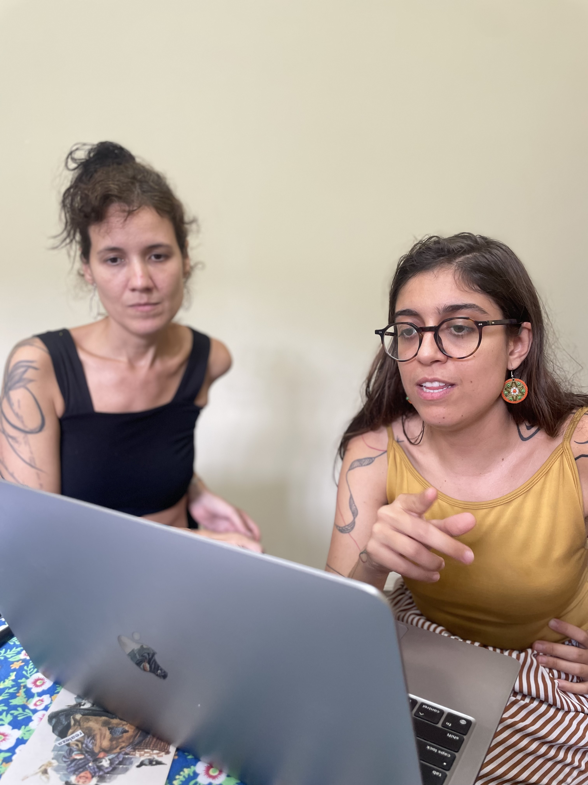
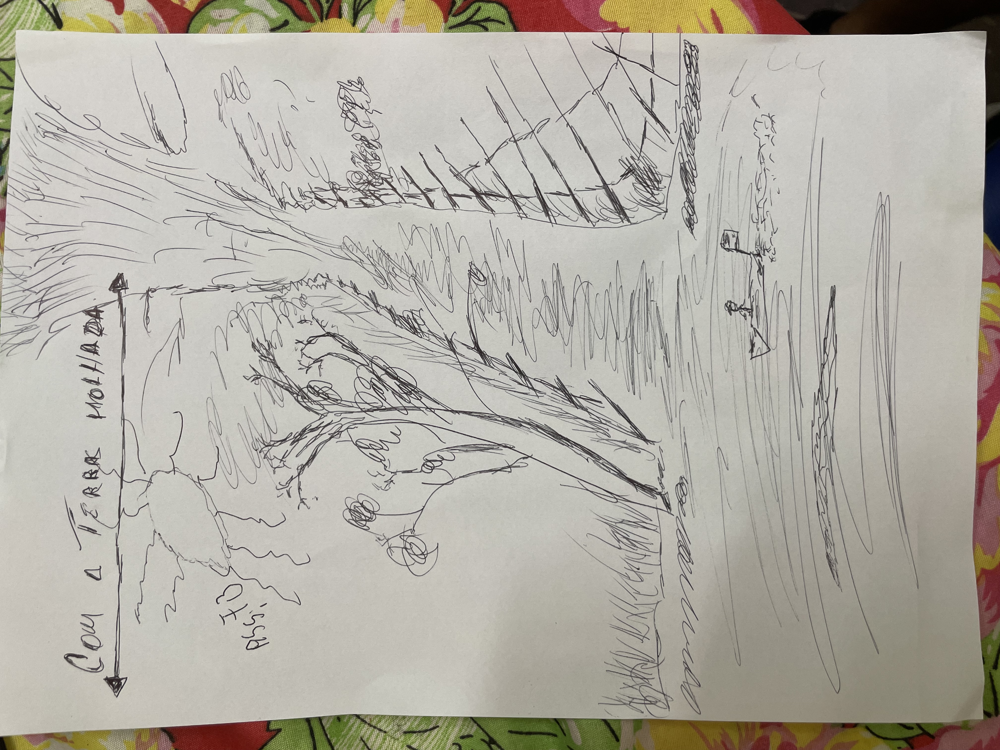
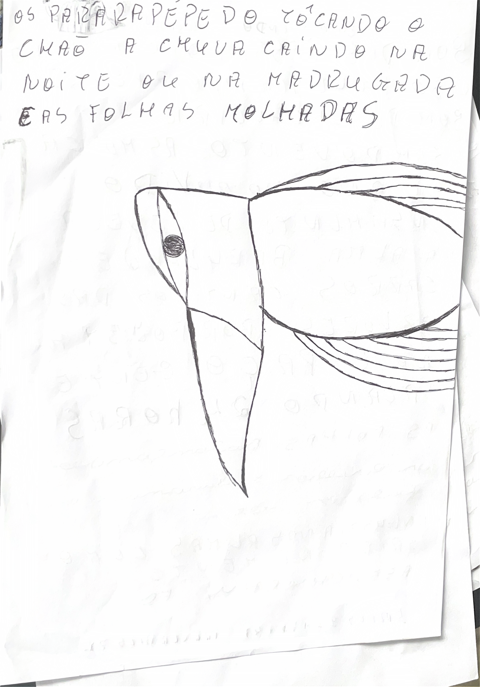
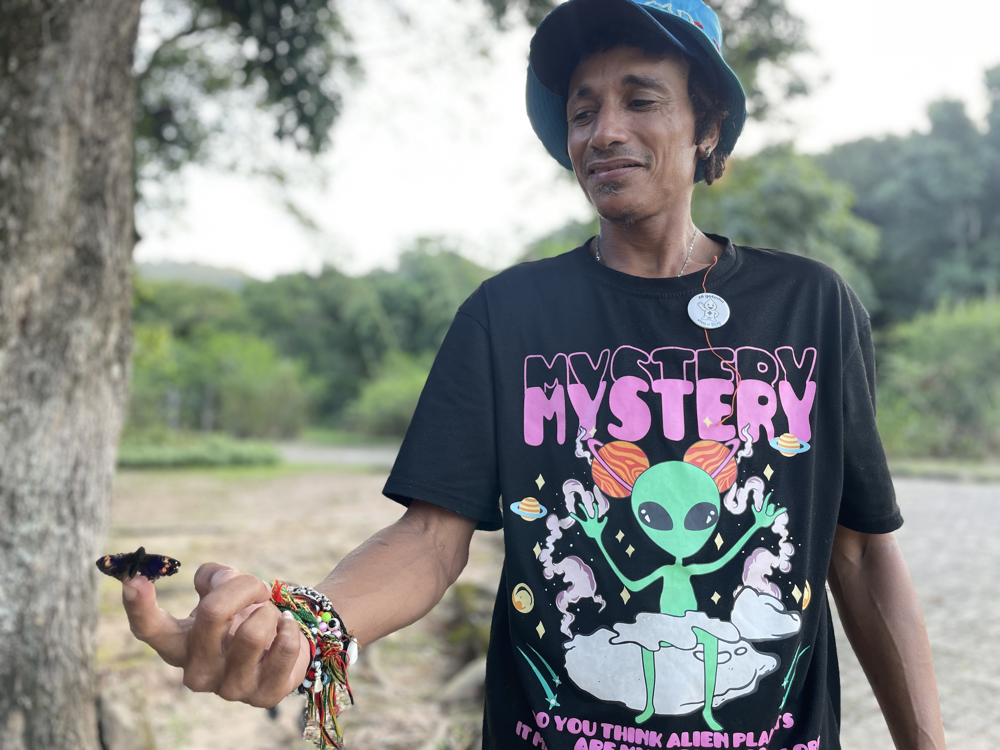
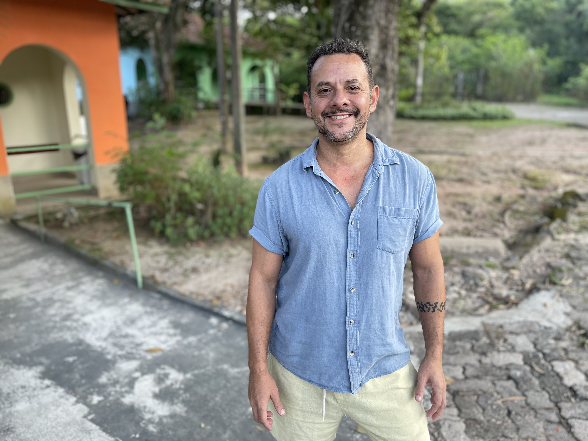
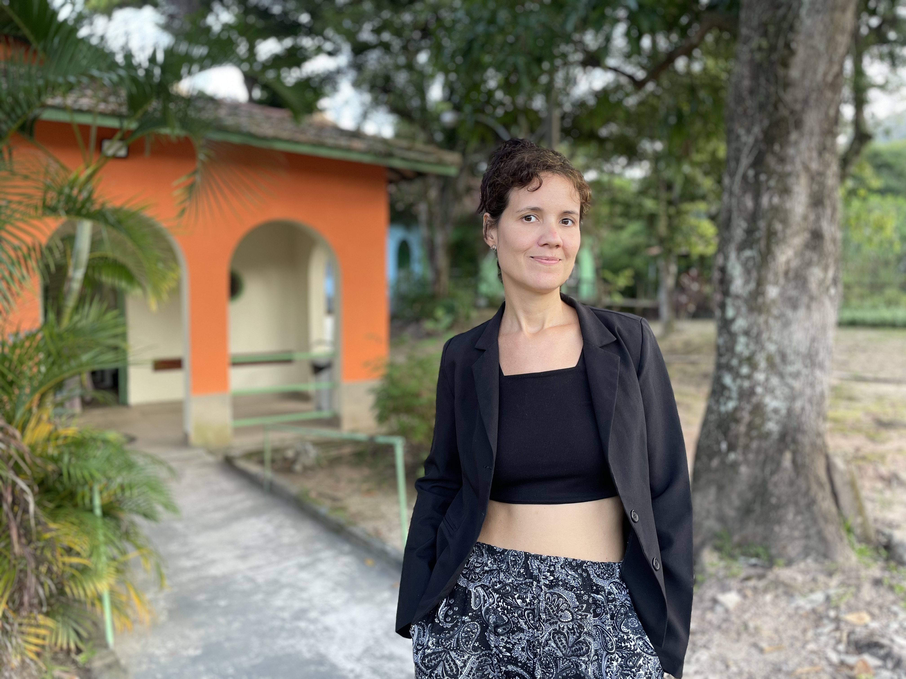
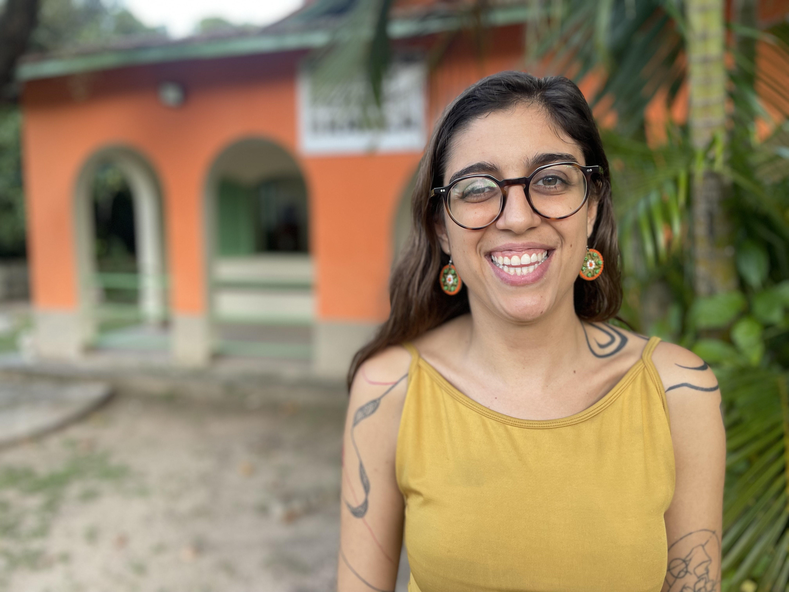
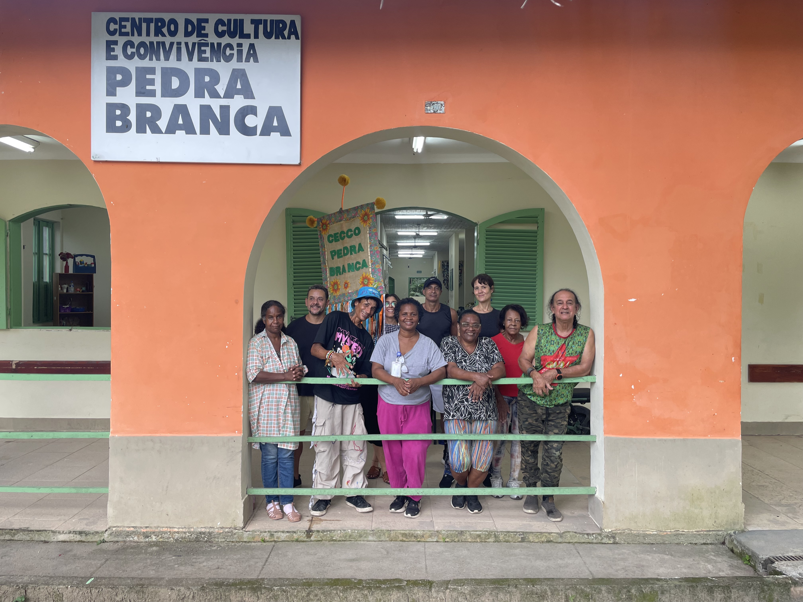

A mesa tem quatro cadeiras.
A mesa tem apoio, a mesa é firme
a mesa é plana
a mesa é rústica
a mesa é larga
a mesa sustenta
a mesa é leve, a mesa é pesada.
A mesa de cor cinza.
A mesa aguenta
a mesa enfeita, a mesa arrumada
a mesa do jantar, a mesa do café, a mesa do lanche
a mesa é redonda, a mesa é quadrada
a mesa é fina e a mesa é grossa.
Tudo isso para dizer que existe uma mesa.
Diários de Bordo
Ficha Técnica
- Realização e Proposição
- mobCONTENT (Mobr Produções Artísticas LTDA)
- Coordenação Geral e Concepção Tecnológica
- Marcos Ferreira
- Coordenação e Preparação Editorial
- Diana de Hollanda
- Oficineira e Facilitação Psicossocial
- Victória Benfica Marra Pasqual
- Consultoria Jurídica
- Mário Pragmácio
- Apoio Técnico e Integração de Serviço
- Daniele Isidoro
- Desenvolvimento do Aplicativo (Fabulador)
- Equipe de Engenharia mobCONTENT
- Ilustração da Capa
- César Medeiros
- Autores Coletivos (Participantes da Oficina)
- Adina Aparecida, Adilson Tiamo, César Medeiros, Daniele Isidoro, Patrícia Ruth, Vera Lúcia e uma participante que solicitou a preservação de sua identidade.
Agradecimentos. Agradecemos profundamente ao CECCO Pedra Branca e ao Museu Bispo do Rosário de Arte Contemporânea, cuja parceria e acolhimento ético foram fundamentais para a existência deste projeto. Estendemos nossa gratidão a Rodrigo Sánchez e a toda a equipe multidisciplinar e aos profissionais da Área Programática 4.0 (AP 4.0) de Jacarepaguá.
Dedicamos um agradecimento especial a todos os profissionais que trabalham diariamente na reconstrução dos sentidos de cuidado, atuando na linha de frente a partir dos ideais da luta antimanicomial e da Reforma Psiquiátrica. É através do compromisso de cada um de vocês que a liberdade, a arte e o afeto se consolidam como pilares indispensáveis e inegociáveis do cuidado psicossocial.
Do caderno da oficina

Quem vence um belo é um belo, quem vence o saúde é outra saúde, quem vence o normal é outro normal, quem vence um cientista é outro cientista.
Introdução
A Bússola e o Mapa
Como nasceu este Diário de Bordo — Marcos Ferreira
Este livro eletrônico é o porto de chegada de uma travessia literária que aconteceu entre os meses de março e abril de 2026. Ao longo de cinco encontros semanais, o CECCO Pedra Branca, localizado em Jacarepaguá, transformou-se em um laboratório de experimentação, afeto e escrita. O projeto "Diários de Bordo: Projetos Literários de Formação" nasceu com um propósito muito claro: usar a literatura e a criação ficcional não como ferramentas de diagnóstico clínico, mas como caminhos para a liberdade artística, a expressão e o bem-estar de pessoas em situação de vulnerabilidade psicossocial, que requerem atenção, escuta e cuidado singular.
A escolha do território carrega uma importância simbólica profunda. A região onde o CECCO Pedra Branca atua foi, historicamente, um cenário de isolamento e lógica manicomial. Hoje, graças às conquistas do Movimento Antimanicomial e à Reforma Psiquiátrica, as paredes que antes simbolizavam o aprisionamento e a exclusão deram lugar a um espaço pulsante de arte, convivência e cultura. Onde antes havia o silenciamento e o sofrimento, hoje floresce a palavra viva.
Na prática, a dinâmica da oficina seguiu a lógica da fabulação. Em vez de propor um diário literal sobre a rotina ou as dores, os participantes foram convidados a transformar sentimentos e vivências em metáforas, enredos e personagens. Esse distanciamento poético funcionou como uma proteção ética e, ao mesmo tempo, um passaporte para a imaginação: ao criar uma história ficcional, o autor ganha a liberdade de explorar o mundo sem expor sua intimidade.
A maior parte dessa jornada aconteceu de forma profundamente analógica — no calor do papel, da caneta, da conversa olho no olho e da troca respeitosa entre o grupo. No entanto, o projeto guardou espaço para um experimento inédito: em duas sessões especiais, introduzimos uma ferramenta de Inteligência Artificial, batizada de Fabulador, para atuar como um apoio criativo. Longe de ser o foco central, o Fabulador serviu como um co-piloto discreto e sem julgamentos, acionado em momentos estratégicos para traduzir sentimentos complexos em imagens visuais ou auxiliar na arquitetura inicial de algum personagem. Foi uma experiência que uniu o afeto humano ao suporte tecnológico, provando que a inovação também pode habitar o território do cuidado.

Uma Escrita Coletiva: Quem Fez a Travessia
Nenhum diário de bordo se escreve sozinho. A beleza desta oficina residiu na horizontalidade, no respeito mútuo e na presença de cada pessoa que ocupou a sala, desfazendo as barreiras invisíveis entre quem cuida e quem é cuidado.
A coordenação e o impulso inicial vieram de Marcos Ferreira e Diana de Hollanda, convidados externos e proponentes do projeto pela mobCONTENT, que trouxeram a proposta conceitual e o suporte tecnológico para o espaço. A condução sensível e diária das oficinas foi liderada por Victória Pasqual, oficineira e profissional do CECCO Pedra Branca, que guiou os exercícios literários com a delicadeza necessária para acolher a singularidade de cada um.
A força do encontro foi tão potente que alterou os papéis inicialmente previstos: Daniele Isidoro, que acompanharia a atividade estritamente como profissional de saúde do serviço, acabou integrando-se de corpo e alma, escrevendo e criando ativamente junto com o grupo.
E, no coração desta jornada, ocupando esse espaço reconfigurado pela liberdade e dando vida aos textos que você lerá a seguir, estiveram os conviventes e participantes fundamentais: Adilson Tiamo, Vera Lúcia, César Medeiros, Patrícia Ruth, Adina Aparecida e uma participante que pediu para não ser identificada.
As páginas a seguir reúnem os contos e poemas nascidos desse encontro. Convidamos você a abrir este mapa e navegar pelas geografias inventadas de nossas mentes. Boa leitura.

A Memória de Stella e o Fechamento de um Ciclo
É impossível habitar e criar neste território sem evocar a memória de Stella do Patrocínio. Foi exatamente nesse mesmo espaço de confinamento que Stella viveu trancafiada, silenciada pela engrenagem da violência manicomial, e onde veio a falecer. Anos mais tarde, o mundo reconheceria o valor artístico imensurável de seu "falatório" — falas potentes, rítmicas e filosoficamente cortantes que foram gravadas em fitas cassete enquanto ela estava internada.
Esta oficina é, fundamentalmente, uma resposta poética à violência histórica sofrida por Stella e por tantas outras vozes interrompidas. Trata-se de um manifesto prático que nos convoca a praticar uma escuta ativa, dedicada e generosa diante das mais diferentes formas de percepção da realidade.
Para nós, realizadores, este livro também fecha um ciclo profundo de investigação e afeto voltado à atenção psicossocial. Há dois anos, em 2024, realizamos uma intervenção urbana colando lambe-lambes com trechos do falatório de Stella pelas ruas de Botafogo — o bairro de onde ela foi capturada e recolhida pela polícia na década de 1960. Agora, ao trazer a escrita e a fabulação para o exato local onde ela foi esquecida, encerramos esse movimento simbólico de retorno e reparação histórica através da arte.

Nota sobre o Uso da Inteligência Artificial: O Fabulador
A inclusão da Inteligência Artificial nesta jornada não buscou automatizar o fazer literário, mas sim abrir um campo inédito de experimentação e diálogo. Utilizada como ferramenta de apoio à criação, a tecnologia operou como um suporte técnico e criativo, integrando a inovação digital ao território do cuidado e da sensibilidade, sempre sob a condução e o protagonismo dos participantes.
O Fabulador funcionou como um recurso complementar em três frentes práticas:
- Estímulo a Imagens Poéticas — auxiliando na tradução de descrições abstratas de emoções complexas em metáforas visuais, que serviram como faíscas geradoras para destravar a escrita.
- Apoio à Estruturação Narrativa — colaborando na organização inicial de personas e enredos ficcionais, o que favoreceu o distanciamento seguro necessário para a criação literária.
- Leitura de Apoio — oferecendo uma reprodução de voz neural, pausada e serena, dos textos finalizados, permitindo que os autores escutassem suas próprias produções sob uma perspectiva externa, fortalecendo a percepção de si mesmos como criadores.
Como as atividades aconteceram dentro de um dispositivo de saúde pública, o desenho da ferramenta foi orientado pelos princípios éticos e humanizados da Reforma Psiquiátrica. O recurso tecnológico foi colocado estritamente a serviço do acolhimento, configurando-se como um suporte de cuidado.
Houve um esforço técnico minucioso para ajustar a configuração da IA à função sensível que ela ocupava naquela engrenagem de atenção psicossocial. Esse refinamento garantiu que o sistema respondesse de forma acolhedora, contida e livre de julgamentos. A ferramenta foi utilizada sob mediação cuidadosa da equipe, buscando evitar induções ou direcionamentos, respeitando integralmente a singularidade de cada história e consolidando-se como um espelho seguro para as fabulações e imaginações dos participantes.
Dia 1
O Primeiro Encontro
O primeiro encontro foi dedicado à formação do grupo, à apresentação da proposta e à construção coletiva de acordos de convivência. Após uma breve apresentação de cada participante e de sua relação com a escrita, compartilhamos os objetivos da oficina e construímos, em conjunto, os chamados "combinados literários". Entre os acordos estabelecidos, destacaram-se o respeito mútuo, a escuta atenta, a liberdade para compartilhar apenas o que cada pessoa desejasse e a compreensão de que a oficina seria um espaço de experimentação, sem exigências quanto à escrita "correta" ou "bem-feita".
Em seguida, realizamos a primeira atividade de escrita. Cada participante recebeu um envelope contendo palavras e imagens previamente selecionadas. Buscou-se reunir materiais que dialogassem com o grupo, priorizando imagens de pessoas racializadas e palavras que pudessem despertar diferentes associações e narrativas. A proposta consistia em trocar alguns desses elementos entre si e, posteriormente, produzir um texto inspirado pelas palavras e imagens que permanecessem com cada participante.
Após esse momento, foi realizado um segundo exercício, que convidava cada pessoa a escolher um espaço da casa e escrever a partir da perspectiva de um objeto presente naquele ambiente. Foi interessante observar como os participantes se espalharam pelo CECCO Pedra Branca, ocupando diferentes cantos e experimentando novos olhares sobre o espaço por meio da escrita.
Ao final de cada atividade, os textos eram compartilhados em roda. Esses momentos de leitura revelaram-se especialmente potentes, marcados pela escuta cuidadosa, pelos aplausos espontâneos, pelos comentários afetuosos e pelas trocas de aprendizados entre os participantes. As narrativas produzidas permitiram conhecer um pouco mais das experiências, sensibilidades e modos de expressão de cada pessoa presente.
O encontro foi encerrado com uma roda de avaliação, na qual os participantes compartilharam suas impressões sobre a experiência e escolheram palavras para sintetizar o que haviam vivido naquela tarde. Em seguida, realizamos um lanche coletivo, momento importante de convivência e comunhão. Ao compartilhar a comida, os participantes permaneceram juntos, conversaram sobre os textos produzidos, retomaram algumas das experiências vividas durante as atividades e puderam reverberar os afetos, reflexões e narrativas que emergiram ao longo do encontro. Esse momento reforçou o caráter coletivo da oficina, fortalecendo vínculos e ampliando as possibilidades de troca para além da escrita. Ao final, todas as pessoas demonstraram interesse e entusiasmo em seguir participando da oficina ao longo dos encontros seguintes.
Hoje eu estava no Ponto de Cultura Pedra Branca, numa sala pequena, ao meu lado tinha muitas pessoas, e, no canto da parede, um ventilador.
O vento, às vezes, vinha ao meu encontro.
Chegava a mim.
Em uma dessas vezes, o vento veio a mim e logo senti o cheiro do aroma do campo e também do perfume das flores.
Nesse momento, meu pensamento vagou até você, o cheiro do perfume do seu corpo. Olhei para o lado, não estava você. Fiquei pensando em você. Será que ela está pensando em mim? Deve ser telepatia. Se for telepatia, que você saiba que eu sou a pessoa que te amo, espero que você também sinta o meu cheiro como se eu estivesse ao seu lado. Mas, por dentro, eu sei que você está pensando em mim. Só quero que você lembre que não sou eu que fiz você sofrer, e sim as pessoas que mentiram a meu respeito. Sempre te falei, quem te ama respeita. Quem ama respeita. Você se esqueceu das minhas palavras e preferiu acreditar em pessoas que diz que são amigas.
Meu amor, você não tem amigos. Amigos que não querem ver os outros felizes.
Ah. Que isso? Quem desligou o ventilador?
O cheiro dela sumiu.
Televisão é tudo para o ser humano?
O que ela ensina o que ela transmite?
Para nós, é um globo terrestre.
O que acontece dentro de uma caixa de ferro, de vidro?
O que ela deixa para as crianças do futuro e do presente?
No passado não tinha televisão, era rádio.
Antigos ouviam tudo no rádio; tudo era real, tudo era bom.
Agora fizeram com cores e sem cores.
Hoje tem televisão no mundo todo, quase no mundo todo.
Está tudo chique. Tudo para nós é televisão, computador, celular.
Tudo digital.
Tudo evolui.
Tudo está quase fácil de se comunicar
com o outro lado do Oriente, tipo, do outro lado.
Eu, Adina, faço atividades aqui no Centro de Atividades. Pilates, alongamento, atividades físicas. Também participo das oficinas. Particularmente, posso falar com propriedade sobre o quanto me faz bem ter essa alegria de estar nesse espaço.
Às vezes me pego pensando, se eu fosse um desses objetos que está sempre aqui, nesse mesmo lugar, eu, sinceramente, gostaria de ser o bebedouro, porque já imaginou se ele pudesse falar? "Bom dia, boa tarde, até amanhã" ou "hoje eu estou com água bem geladinha". Fico a imaginar como este bebedouro é importante. Tão simples.
Dentre as maravilhas que a natureza nos dá, uma das mais belas é a flor.
A flor faz parte das nossas vidas do início ao fim. Está presente quando nascemos, seja enfeitando o quarto ou como presente dado à nossa mãe pelo nosso nascimento. Ou até mesmo quando nos olham e dizem que somos um bebê lindo como uma flor.
Encontramos ela no nosso jardim, nas jarras no meio da sala, que, por sinal, embeleza, dando cor e vida à nossa casa. Ao nosso amor. Também fazem parte dos momentos mais importantes de nossas vidas, como aniversários, formatura, casamentos. De cores variadas, tamanhos e cheiros, a encontramos em suas inúmeras formas, dando um toque de exuberância a toda a natureza.
Em lugares feios, tentando enfeitá-los, como no pântano, ou em lugares já bonitos, tornando-os mais bonitos ainda. Sem preconceito, sem distinção, a flor encanta e embeleza até nossos últimos momentos de vida. Ela nos acompanha na nossa última morada, embelezando essa despedida tão triste.
Dia 2
Respirando e Fabulando
O segundo encontro da oficina foi marcado por um convite à desaceleração, à escuta e à experimentação da escrita como um processo que atravessa o corpo, a imaginação e o encontro com o outro. A primeira proposta teve como ponto de partida um exercício de atenção plena. Antes de qualquer escrita, o grupo foi convidado a respirar junto, direcionando a atenção para o próprio corpo. Por meio de uma breve condução, os participantes percorreram sensações corporais, observaram a respiração e experimentaram permanecer presentes ao que surgia, sem a necessidade de registrar ou interpretar imediatamente. Sons, imagens, pensamentos e sensações podiam aparecer e desaparecer, enquanto a atenção retornava ao corpo e ao ato de respirar.
Foi um momento que mobilizou o grupo de forma sensível. Ver os participantes espalhados pelo espaço, respirando juntos e ocupando aquele tempo de pausa, produziu uma atmosfera de presença rara em meio à correria cotidiana. Como compartilhou um dos conviventes, o exercício possibilitou "lembrar que está vivo". Havia algo de reconexão com um corpo que caminha diariamente pela cidade, atravessado por compromissos, urgências e preocupações, mas que nem sempre encontra espaço para perceber o que sente.
Após esse momento, cada participante foi convidado a registrar aquilo que havia emergido durante a prática: uma imagem, um som, uma frase, uma lembrança ou uma sensação corporal. A proposta era acolher esses fragmentos sem organizá-los, permitindo que aparecessem em sua forma mais bruta e espontânea.
A segunda atividade aprofundou a dimensão coletiva da criação. Na proposta "Poesia Compartilhada", cada participante iniciou uma folha escrevendo uma frase curta. Em seguida, as folhas circularam pela roda e novas frases foram sendo acrescentadas sucessivamente, sem que se pudesse visualizar o texto completo. Cada pessoa escrevia a partir do pouco que via — ou, por vezes, a partir do vazio — permitindo que as narrativas fossem construídas coletivamente por múltiplas mãos.
Quando as folhas retornaram aos seus autores iniciais, os textos foram lidos pela primeira vez em sua totalidade. O resultado provocou risos, surpresas e encantamentos. Frases que pareciam não ter relação encontravam sentidos inesperados, produzindo imagens poéticas que dificilmente surgiriam em um processo individual de escrita. O exercício evidenciou a potência da criação coletiva, em que cada pessoa deixa marcas em uma obra que já não pertence a ninguém em particular, mas ao grupo como um todo.
Em um segundo momento, alguns desses textos coletivos foram levados ao Fabulador, aplicativo de IA de auxílio à escrita. Em coletivo os participantes experimentaram expandir, transformar ou continuar as narrativas produzidas pela roda. A proposta era utilizar a ferramenta como um disparador criativo, explorando novas possibilidades para textos que já haviam nascido do encontro entre diferentes imaginações.
Foi nesse momento que surgiram reflexões muito interessantes sobre a criação compartilhada. Houve algo de viagem coletiva na experiência de acompanhar os caminhos sugeridos pelo Fabulador. Os textos ganhavam novos contornos, imagens inesperadas apareciam e as histórias se deslocavam para territórios que dificilmente teriam sido alcançados individualmente. Enquanto oficineira, vivi também um momento de dúvida sobre como essa proposta seria recebida, mas a experiência revelou a potência de pensar a inteligência artificial como mais um agente escritor presente na roda. Não como alguém que escreve por nós, mas como um dispositivo capaz de provocar deslocamentos, expandir perspectivas e abrir caminhos para a imaginação.
Mais do que produzir textos, o exercício permitiu refletir sobre a fabulação como prática coletiva. Havia algo potente em poder criar junto, acompanhar os delírios uns dos outros e sustentar narrativas compartilhadas. Diferentemente de experiências marcadas pelo isolamento e pela impossibilidade de encontrar interlocutores para determinadas compreensões do mundo, a oficina produziu um espaço em que a imaginação podia circular e ser acolhida. Fabular coletivamente tornou-se, assim, uma forma de produzir vínculo, construir pertencimento e experimentar outros modos de existir.
No encerramento, cada participante pôde reler os textos produzidos e refletir sobre sua possível inclusão no e-book coletivo, avaliando quais escritos desejava manter, revisar ou continuar desenvolvendo. Em seguida, realizamos uma roda de conclusão, na qual cada pessoa compartilhou brevemente como havia sido participar daquele encontro e escolheu uma palavra para sintetizar a experiência vivida.
Como já vem se tornando tradição na oficina, finalizamos a tarde em torno de um lanche compartilhado. Entre cafés, bolos, frutas e conversas, os textos continuaram reverberando. O momento de comer junto tornou-se também um momento de elaboração coletiva, em que as histórias produzidas ao longo do encontro puderam circular de outras formas. Ali, entre risos, comentários e trocas afetivas, fortaleciam-se vínculos e ampliavam-se possibilidades de convivência. Mais do que um encerramento, o lanche coletivo constituiu-se como parte fundamental da oficina: um espaço de comunhão, alegria e celebração daquilo que se cria quando pessoas se reúnem para escrever, imaginar e estar juntas.
Eu, Adilson, fui ao ponto de cultura Pedra Branca. A professora de história me levou para a parte de fora da casa, junto com outros alunos, e nós, andando, sentimos ouvir a natureza. Para nós sentirmos, ouvir a natureza. Eu, no momento de silêncio, senti um perfume de orquídeas.
Ao andar mais um pouco, o cheiro mudou, mas o ar estava parado. Eu fiquei confuso de andar e o perfume estava vindo. Mudei de lugar, veio outro cheiro de rosas brancas. Voltei atrás alguns passos e veio o aroma da orquídea. Pedi à professora para ficar perto de mim, não era dela o cheiro, digo, o perfume.
No mesmo momento, ouvi os pássaros cantando e um barulho de vassoura. Alguém estava varrendo uma casa, só podia ser a casa que estava ao meu lado. Um pássaro cantava, eu acho que estava chorando, porque o matagal perto estava cortado. Eu pensei: é o passarinho fêmea que perdeu o ninho, estava cantando desesperado. Aí a aula acabou.
Eu e a natureza. A vida pulsando ao redor. Sons diversos, cores. O vento no meu rosto, no meu corpo, me faz sentir arrepios. Sinto meu sangue circular tão rápido pelas minhas veias, meu coração bate forte. Medo? Emoção? Ou é o desconhecido que me assusta? Estou de olhos fechados. Percebo o quanto de energia e de vida que está à minha volta. É a força da natureza. É o que nos mantém vivos nesse planeta.
Ouço passarinhos cantando, odores diversos vindos das árvores frutíferas. Sinto o sol queimando a minha pele. Uma ansiedade tomando o meu corpo, mas, ao mesmo tempo, uma sensação de paz chegando devagarinho, fazendo-me sentir bem. Sentir uma leveza da qual eu estava precisando. Estou leve, livre e solta. Voltei da meditação.
Nem sempre em mim, ao ver as cores que vi, uma tonalidade diferente. De achar que ver é enxergar tudo na minha frente.
Tocar em mim não me sinto segura. Sentindo o gosto amargo. O silêncio da pessoa é deixar sentir o cheiro da mata. Mas pegar e colocar a mão no seu rosto é confiar em si.
O raio de sol me fez sentir o despertar do sol me fazendo transpirar.
A cada passo que meu pé toca com o calcanhar, a sola em contato com o chão me faz desequilibrar.
Há meses senti o sopro do vento tocando em meu rosto.
Braços, mãos e corpo como um refrescor.
Observei as cores das árvores – verdes, verde-claras, verde-escuras – com o meu doce olhar. Sinto no meu paladar a saliva doce como o mel.
Senti o vento tocar o meu corpo resfriando o raio de sol.
Ouvi o barulho longe de homens a conversar.
Ouvi o barulho de dentro da casa de pessoas a conversar.
Ouvi o barulho dos pássaros a cantarolar.
Ouvi o barulho da moto arrancar.
Eu e o mundo. Ouvi o som dos pássaros cantando, o sol queimando a pele, o som de cachoeira, o som do vento, as moscas assobiando no meu ouvido.
O pensamento de leveza na alma, o barulho de carros, o cântico das árvores, a borboleta no espaço, gente falando 24 horas, as folhas balançando, os grilos triturando as folhas.
Os paralelepípedos tocando o chão, a chuva caindo na noite ou na madrugada e as folhas molhadas.
Registro do Exercício com IA
O texto recuado à esquerda refere-se à fala das oficineiras, enquanto o texto com tabulação é dos participantes. As oficineiras submetem ao fabulador as escolhas do grupo e compartilham as sugestões de palavras da inteligência artificial. As falas do grupo não estão discriminadas por autor.
Vocês lembram o que a gente tinha falado?
A amabilidade ao próximo nos ajuda a superar as dificuldades. Liberdade.
Redemoinho dos ventos; ventos que movem redemoinhos.
A água nos possibilita gerar energia.
Os ventos geram grandes redemoinhos, geram tornados no mundo e tudo o que vem pela frente. O tornado, como raiz, brota na terra para os povos da sociedade democrática. Com a água e o sol a germinarem uma vida, uma natureza que vem de Deus.
Pra construir a história, a gente precisa fazer escolhas.
A gente precisa fazer escolhas, né? Qual história a gente vai contar?
É esse estrondo?
Ele perguntou sobre o processo, era lento? É. É um processo gradativo como uma fotossíntese. Barulho silencioso no processo de morrer e renascer. Tá.
Acho que a gente tem que pensar no tornado, que foi o início de tudo; como é um tornado? Vocês podem mudar de ideia também, pode ser metafórico, não precisa ser um tornado literal. A gente está criando aqui.
O sentimento está se desenrolando agora. Sim. Eu estou entendendo que a gente está falando sobre transformação, sobre mudança, né? Sobre alguma coisa que vai, uma coisa nova que vai surgir.
Todo mundo entende isso ou não?
Mudança do quê ou de quem, né? E como, né?
Como essa mudança acontece? Se é brisa, se é terra que germina, se é... Eu sugiro que a gente, pra começar, escolha um desses elementos: terra molhada, metal fundido ou frescor do vento.
Frescor do vento. Terra molhada. Terra molhada.
Três pessoas escolhem terra molhada. Quatro. Então a gente fica com terra molhada.
Tá, terra molhada.
Acontece no estalo rápido ou processo lento?
É rápido. Processo lento. Lento. Lento. Lento. Terra molhada.
A gente esquece a questão de certo e errado, vai mergulhando no que está se formando e se rendendo à história nascendo. Na literatura tudo é possível, a gente não está trabalhando com jornal, a gente está criando. Como é o barulho? É o silêncio de algo brotando ou estrondo do que tá sendo destruído?
Silêncio de algo brotando. Silêncio, silêncio.
Temos dois silêncios, três silêncios, quatro silêncios, então silêncio. Lembrando que a gente está respondendo coisas, mas a qualquer momento a gente pode falar pra ele mandar um parágrafo. Posso pedir pra ele sugerir um parágrafo pra gente? Pode nos sugerir um parágrafo?
O redemoinho agora é lento, não há o barulho da queda, mas o som de algo brotando no silêncio. A destruição vira terra molhada, onde o tornado que antes parecia fim, se enterra como raiz. É desconstrução em construção. Um processo de germinar devagar, onde o que foi desfeito, vira o chão macio, para uma natureza que vem de Deus.
Aí ele continua explorando e perguntando, mas a gente pode falar "basta" ou a gente pode continuar. O fim é quando a gente diz "fim". Eu ia sugerir de ele dar um parágrafo e aí a partir desse parágrafo cada um sugere um outro parágrafo e a gente faz um texto final com isso.
É uma frase só? Como você quiser.
É a natureza cumprindo o seu papel. O redemoinho tornou-se uma brisa. O terremoto tornou-se o vento a bailar. A brisa tornou-se o vento. Todos se tornaram a ventar. A natureza existe, sim. Olha aqui. Tem o vento. Tem a terra, tem a brisa. Tornado. Mas eu vou mais pela terra, sabe por quê? Se cai tudo, essa terra some, mas ela reaparece. Do antigo, vem o novo, aí dá pra reconstruir a natureza, as árvores. Até casas. A gente vive em balanço na terra. Mas a terra, ela se reconstrói. Cai uma profundidade de terra. Aí seca, porque ela fica molhada. Ela seca, dá pra fazer muita coisa. Veja aqui, aqui era manicômio. Hoje, o que é? Me explica. É isso o que eu quero dizer. O silêncio destrói. A construção constrói o redemoinho. O redemoinho que pega nas águas tranquilas como um silêncio da alma construindo um ser vivente. A terra fica molhada de Deus Todo Poderoso. Ele constrói um coração chamado silêncio do tornado.
Nem tudo está perdido. No lixo ainda nascem as flores.
Gente, eu estou muito empolgada para ver o que ele vai trazer, posso mandar?
Texto final — Fabulador
Amabilidade entre o próximo é tudo de bom.
Ajuda a superar as dificuldades, liberdade.
O redemoinho dos ventos. Ventos que movem redemoinhos
na água possibilitam gerar energia. E os ventos que
geram grandes redemoinhos em terra geram tornados.
Mas esse tornado não destrói; ele renova, mesmo que seja
através da destruição.
Desconstrução em construção.
Natureza cumprindo seu papel.
O redemoinho tornou-se uma brisa.
O terremoto tornou-se o vento a bailar.
A brisa tornou-se um vento onde todos se tornam a ventar.
A natureza existe, sim.
Porque tem o vento, tem a terra, tem a brisa e o tornado.
Se cai tudo, se a terra some, ela aparece.
Se é um antigo, vem um novo.
Aí dá para reconstruir.
A natureza, as árvores, até casa.
A terra não morre e fica.
A gente vive em meio ao balanço na terra.
A terra, ela reconstrói.
Cai uma profundidade de terra, aí seca.
Dá para fazer muita coisa.
Não vê aqui?
Aqui era manicômio.
Hoje, o que é?
A semente caiu.
Mesmo que eu não tenha cuidado,
ela encontra o alimento certo.
Próprio ou impróprio na terra.
Fazendo assim o recomposto da carne dura
equivalente do nutriente certo para germinação.
Convida a vida germinativa.
Gradativo e adaptável para um renascimento mais forte.
Não mais para o desintegrar dos sonhos que impulsionam
o redemoinho dos nossos sentimentos.
O tornado que cresceu e se desvaneceu, ele agora me dá
a certeza de que vale a pena continuar vivendo.
Passando por todo e qualquer tipo de processo que
almeja o nosso crescimento como seres humanos.
O silêncio destrói. Reconstrução.
A construção constrói o redemoinho.
O redemoinho pega nas águas tranquilas, como o silêncio da alma,
construindo um ser vivente na terra que fica molhada de Deus,
o Todo Poderoso.
Como ele constrói um furacão chamado o silêncio do tornado.
Nem tudo está perdido.
No lixo ainda nascem flores.
Bom, palmas, para vocês. Como foi, gente? Primeiro contato com essa inteligência artificial. Como foi para vocês? O encontro foi bom?
Foi ótimo.

Dia 3
Toda Vida Dá um Livro
O terceiro encontro teve início com um deslocamento físico pelo serviço. Saímos do espaço habitual da oficina e caminhamos juntos até outra área do CECCO Pedra Branca. Esse pequeno movimento, aparentemente simples, já anunciava algo importante sobre o encontro: a possibilidade de mudar de lugar, de olhar por outros ângulos e de experimentar novos modos de estar com as próprias histórias.
Ao chegarmos, realizamos o exercício "Minha vida dá um livro", uma proposta baseada em uma atividade desenvolvida pelo Laboratório de Sensibilidades e Devires (UFRJ). Uma ação de escuta, escrita e retorno. Em duplas, cada participante foi convidado a contar uma história de sua vida como se estivesse apresentando um livro. Não era necessário narrar uma trajetória inteira; bastava uma cena, um acontecimento, uma fase ou mesmo uma atmosfera que carregasse algo de significativo.
Enquanto uma pessoa narrava, a outra escrevia a história que escutava. Em seguida, os papéis eram invertidos. Ao final, acontecia o momento mais delicado da atividade: a leitura cruzada. Cada participante recebia sua própria história de volta, agora atravessada pela escuta e pela escrita de outra pessoa.
Durante a preparação para a atividade, compreendemos a importância de que as próprias oficineiras participassem do exercício. Mais do que conduzir a proposta, era necessário habitá-la. Contar um pouco de nossas histórias e, ao mesmo tempo, receber de participantes uma narrativa sobre nós tornou-se uma experiência potente de convivência. Não se tratava de analisar a vida de ninguém, mas de construir junto. De experimentar a escrita como encontro. De reconhecer que toda narrativa nasce de uma relação.
A partilha que se seguiu foi profundamente emocionante. O deslocamento entre aquilo que contamos, aquilo que o outro escuta e aquilo que retorna como escrita produziu afetos intensos. Ser lido por olhos gentis permitiu que algumas participantes se reconhecessem de formas inéditas. Houve quem se emocionasse ao perceber, nas palavras de outra pessoa, uma força que não sabia possuir. Houve também quem compartilhasse que aquele espaço estava sendo transformador para compreender que cada sujeito carrega uma história, contribuindo para diminuir preconceitos e possibilitando novos posicionamentos diante do outro.
Após esse momento, seguimos para o exercício "Minha página do Diário de Bordo". A proposta partia da história recebida na atividade anterior. Inicialmente, cada participante realizou uma releitura silenciosa do texto escrito pela dupla, observando aquilo que reconhecia, aquilo que surpreendia e aquilo que ainda desejava dizer. Em seguida, registrou três marcas dessa leitura: uma frase em que se reconhecia, uma frase que causava surpresa e uma parte de si que ainda queria falar.
Depois, cada pessoa escreveu uma lista livre a partir da frase "Hoje eu carrego comigo...", reunindo sentimentos, lembranças, desejos, perguntas, medos, forças e tudo aquilo que se fazia presente naquele momento da vida. A partir desse percurso, criaram um título para sua página e iniciaram a escrita de um texto em formato de diário, explorando diferentes possibilidades narrativas e modos de dizer de si.
Mais do que produzir um texto, o exercício convidava cada participante a habitar sua própria história de outra maneira. A reconhecer o que permanece, o que se transforma e o que ainda pede passagem.
Este foi um encontro de pré-finalização. Um momento de olhar para o caminho percorrido e reconhecer o processo construído coletivamente ao longo da oficina. As partilhas foram atravessadas por emoção, gratidão e pelo desejo de continuidade. Tornava-se cada vez mais evidente que o objetivo do projeto estava em curso: fazer da escrita um espaço de convivência, criação e expansão da vida.
Ao longo dos encontros, experimentamos diferentes ferramentas para fabular novos mundos. E talvez uma das maiores descobertas tenha sido justamente esta: só podemos inventar novos caminhos quando também reconhecemos de onde partimos, o chão que pisamos e as histórias que já atravessamos. Afinal, a vida de cada pessoa pode dar um livro.
Como em todos os encontros, encerramos a tarde compartilhando alimentos. O lanche coletivo voltou a marcar esse tempo de permanência, conversa e convivência, permitindo que os afetos produzidos ao longo das atividades continuassem reverberando. Também lançamos um convite para o próximo e último encontro: começar a refletir sobre o que cada pessoa gostaria de publicar e compartilhar. Que histórias desejam ganhar as páginas do livro que estamos construindo juntos? Como transformar esse percurso em uma obra coletiva capaz de guardar memórias, afetos e futuros possíveis?
Ah, o nosso corpo é incomodado. Vem de um ciúme. Uns certos tipos de postura.
Ver vidas para relaxar a mente que está confusa. Os ventos que caem no cabelo relaxam a mente que está enfeitiçada. Como uma oração que jogaram no mundo espiritual.
Por que o mal e o bem existem? A saúde mental do CAPS ajuda ou atrapalha? Eles oprimem muito a nossa mente. Por que isso acontece na saúde mental?
A dança é para relaxar a dor. Não é para doer. A dor não é fingida.
O que anda para nós? A arte está em nós e no mundo. Por que eles não compreendem? Com gastos calóricos. Trabalhar é bom. Trabalhar para quê? Trabalhar 24 horas dá muito estresse. Como lidar com o estresse? A arte é equilíbrio mental.
Nós ganhamos o pão nosso de cada dia.
Meu pai e minha mãe eram um casal, escrevi assim, sabe? Novinho. Aí, ficamos juntos, morando numa chácara, plantando milho, mandioca. Como minha mãe ficou grávida, nasci com problemas. Minha mãe falou pra mim que, quando eu fizesse quinze anos, era pra fazer uma promessa. Foi na Romaria comigo e eu fiquei salva. Sã e salva. Como meu pai tinha morrido, com o dinheiro da pensão dele, fui fazer faculdade. Nossa Senhora de Abadia. Não escrevi muito bem, pulei muita coisa. Estou um pouco aérea.
Bem, vou falar de resumo da minha professora Dani. Ela, desde os três anos de idade, sempre foi muito amada pelas pessoas que a cercaram. Vou falar sobre como ela cresceu no meio de militares e juízes.
O desembargador César Augusto e sua esposa, Maria de Lourdes, me amaram muito, me colocaram para estudar e conduziram o meu futuro. Sempre fui uma criança saudável, esperta, brincalhona e muito feliz. Viajava muito, sempre em janeiro, íamos para o estado de Espírito Santo. Minhas férias sempre foram muito divertidas e ótimas. Infelizmente, conheci minha mãe e tudo mudou.
Minha mãe era uma mulher muito sofredora, não foi fácil conviver com ela na fase da adolescência. Aos dezoito anos, voltei a morar com meu pai e minha tia. Eles realizaram todos os meus sonhos. Um deles era que me formasse como juíza. Mas, infelizmente, não consegui fazer a faculdade de Direito. Fiz de Educação Física, área na qual trabalho atualmente. Hoje, com 53 anos, estou fazendo faculdade de Direito. Não é fácil. Mas estou fazendo.
Fui uma criança comum, porém, evitava sonhar. Tive uma infância difícil e decidi que seria uma mulher forte e foi o que fiz. Estudei, me formei e fui o comandante da minha vida. Casei e tive uma filha. Me separei e fui à luta. Sempre senti falta de carinho, mas hoje sei que sou uma pessoa muito amada e recebo muito carinho. Me casei novamente com alguém vinte anos mais novo do que eu, que me mostrou como a vida poderia ser boa e me ajudou a me tornar a mulher que hoje sou: livre, feliz e cheia de sonho.
Dia 4
Escolhas, Polifonias e Continuidade
Nosso quarto e último encontro foi atravessado por um misto de celebração, expectativa e despedida. Era o momento de olhar para trás, percorrer os caminhos construídos ao longo da oficina e decidir o que seguiria adiante na forma de publicação.
Retomamos as pastas que cada participante havia recebido no início do processo. Nelas estavam reunidas as produções realizadas ao longo dos encontros: textos, anotações, experimentações e rastros de uma escrita que foi se construindo coletivamente, mas que também carregava marcas muito singulares. Infelizmente, um dos participantes que iniciou a oficina não pôde seguir conosco até este último encontro e não compartilhou desse momento de fechamento. Em contrapartida, um dos conviventes trouxe sua esposa, cuja presença contribuiu de forma muito sensível para as trocas e para a dinâmica do grupo.
Abrimos a tarde conversando sobre o significado daquele encontro. Em seguida, cada participante recebeu sua pasta e foi convidado a folhear sua própria trajetória, revisitando os textos produzidos e escolhendo aquilo que gostaria — ou não — de publicar no livro que estamos construindo coletivamente. A proposta era simples: oferecer tempo, espaço e autonomia para que cada pessoa pudesse exercer seu direito sobre sua própria narrativa.
Foi um momento bonito de observação. Alguns se recolheram em cantos mais silenciosos, outros compartilharam leituras e comentários. Entre lembranças e risadas, cada um foi reencontrando versões de si que haviam surgido ao longo do percurso.
Uma das conviventes, no entanto, demonstrou incômodo com um dos textos que havia escrito. Não se reconhecia naquela produção e não desejava vê-la publicada. Sentamos juntas e abrimos a inteligência artificial. Utilizando o recurso do Fabulador, passamos a experimentar novas possibilidades para aquele material. A experiência foi muito potente: a tecnologia não apareceu como substituta da escrita, mas como parceira de um processo de elaboração. A partir das interações, surgiu um novo texto no qual ela conseguiu se reconhecer, identificando ali algo que desejava compartilhar. O que antes era rejeição transformou-se em possibilidade.
Curiosamente, essa primeira etapa terminou muito mais rápido do que havíamos imaginado. Havíamos previsto um longo período de seleção e revisão, mas o grupo nos surpreendeu. Houve poucas restrições e muito desejo de publicação. Mais do que escolher o que retirar, os participantes demonstraram vontade de seguir compartilhando suas produções. O que apareceu não foi um movimento de censura ou retraimento, mas de reconhecimento e valorização do que havia sido construído.
Diante desse tempo que se abriu inesperadamente, mais uma vez precisamos nos reinventar. Decidimos então criar uma atividade final inspirada justamente pelo desejo de continuidade que atravessava o grupo.
Retomamos os envelopes de imagens e palavras utilizados em nosso primeiro encontro. Em conjunto, os participantes criaram composições visuais coletivas, organizando imagens, palavras e recortes em novas cenas. Fotografamos essas construções e as enviamos ao Fabulador, utilizando-as como disparadoras para a criação de contos coletivos.
A partir dessas imagens nasceram três histórias. Histórias atravessadas por múltiplas vozes, contribuições, associações e imaginações. Cada pessoa acrescentava um detalhe, uma ideia, uma memória ou um rumo inesperado para a narrativa. A inteligência artificial, nesse contexto, atuou como uma reverberadora das vozes presentes, ampliando conexões, aproximando contribuições diversas e ajudando a encontrar pontos de encontro para a construção de uma escrita verdadeiramente coletiva.
Mais do que produzir contos, o exercício evidenciou algo que atravessou toda a oficina: a escrita como espaço de convivência. Um território onde diferentes experiências podem coexistir, se afetar mutuamente e criar algo novo sem apagar as singularidades de cada participante. Foi um exercício de polifonia, de escuta e de construção de comuns.
Encerramos nosso percurso da forma como ele se consolidou ao longo dos encontros: em torno de um lanche coletivo. Mais uma vez, o comer junto tornou-se parte fundamental da experiência. Entre cafés, conversas e despedidas, pudemos reverberar aquilo que havia sido vivido e produzido, compartilhando expectativas sobre os próximos passos.
O livro já deixava de ser apenas uma ideia para se tornar uma possibilidade concreta. Falamos sobre seu lançamento e perguntamos ao grupo onde gostariam de celebrar esse momento. A resposta veio imediata, quase em coro: o lançamento deveria acontecer no CECCO Pedra Branca.
O desejo coletivo carregava uma profunda coerência. Foi ali que a escrita encontrou morada. Foi naquele espaço que as palavras puderam circular livremente, que as trocas aconteceram, que as histórias ganharam corpo e que novas possibilidades foram inventadas. O CECCO Pedra Branca foi mais do que cenário da oficina; foi casa da convivência, da criação e da expansão dos possíveis. Não poderia haver lugar mais adequado para acolher o nascimento deste livro.
No primeiro dia, fiquei ansioso para saber o que é uma escrita. Eu me impactei com essa prosa que aconteceu comigo. Fazia isso no colégio, mas não sabia que iria dar certo. Mas Deus dá o dom a quem é escolhido. Muita gente fala que não, muita gente fala que não é capaz, mas fica olhando para o outro para não dar certo.
E o sim-escrita é uma escola que fala do mundo em que vivemos, o que é a aula, a aula de escrita, o que aprendemos com ela, ficar maduro ou molenga? Não sei o que é isso, tudo é novidade para nós. Nascemos para escrever ou para olhar o que fazemos?
Eu adorei, queria que continuasse: sempre nós botarmos a cabeça para funcionar. Só pensar nas coisas negativas não leva a nada, só leva a desprezo. Isso tudo é maravilhoso. Como aconteceu? Poderia acontecer mais? Em tempo todo, botei tudo o que sinto na alma, por dentro do espírito. Nós estamos de passagem aqui na terra, que Deus ilumine cada vez mais nós.
Sempre tive facilidade em escrever, mas, ao participar dessa oficina criativa, percebi que não era tão fácil. O desafio de escrever sobre um tema sugerido é diferente de dissertar sobre o que você sente, sobre o que lhe é tão íntimo, os seus pensamentos, as suas lembranças e emoções.
Descobri que, apesar de ser tida como séria, ao falar de mim, passo a ideia de uma pessoa alegre e extrovertida. Notei também que, apesar de não gostar de mostrar-me uma pessoa sentimental, adoro falar de amor, sentimento que, para mim, move o mundo.
Enfim, foi uma experiência fascinante que serviu para eu aprender a respeitar opiniões diferentes das minhas e ver como se comunicar é difícil. Serviu também para cada vez mais eu valorizar os livros e, principalmente, quem os escreve.
Hoje é um dia que vai ficar marcado na minha vida. Que pena ser o último dia de nosso encontro com a equipe. Juntos trocamos ideias e colocamos em prática nossas experiências de vida. E, assim, nessa troca, nós nos conhecemos mais e, assim, nos respeitamos mais como pessoas; uma coisa muito importante desses encontros.
Para mim, foi uma experiência maravilhosa. Foi de saber que vai ser das minhas experiências da minha vida e de algumas inseguranças. Espero que tenha contribuído com minhas dúvidas e inseguranças.
E, assim como para mim a experiência e as dúvidas delas foi para mim, a minha pessoa que agradeço a todas as pessoas que estamos passando e recebendo e doando nossas experiências.
Os textos foram incríveis. Foram fáceis de escrever e de prosa.
Às vezes eu me perdia nas ideias, tentando achar um sentido para as frases. Às vezes eu me perguntava se estava combinando o sentido das ideias. Às vezes os textos e as frases pareciam frágeis. Às vezes as frases do texto eram maduras. Às vezes as ideias eram muito incríveis e lindas de se rimar. Às vezes com cada texto desenvolvido nasciam turbilhões de ideias. Às vezes as frases escritas eram lindas de combinar. Às vezes o sentido das ideias era grande para se desenvolver e lindo para se ler. Às vezes se inspiravam tanto quanto as ideias vindas a bailar.
Não foi fácil escrever poesia. Mas foram as coisas mais gostosas que desenvolvi nesse mês.
Eu, pra mim, nada a esclarecer, os meus dizeres de escrever as histórias minhas. No momento, me sentia solta sobre as minhas dúvidas. Gosto muito de ler os conteúdos e desejar algo importante. Não quero iluminar as minhas ideias, as minhas histórias. Pra mim, é a minha marca. Eu já escrevi muito na minha vida. No momento, eu escreveria pra desabafar as coisas que eu sinto.
O que vem é a nova era de encarar os meus desejos de escrever. Foi muito bom lembrar da minha história de vida.
Esforçada em um equilíbrio de vida. O esforço de não desistir de fazer as coisas. Hoje vejo que ainda existe o amanhã. Amanhã de esperança do futuro. Um desejo realizado. Consegui o que não conseguia, o que não tinha disposição para fazer. Ganhei a asa. Confiar mais e alcançar voos.

Mas eu estava com saúde, estava com muita saúde,
Me adoeceram, me internaram no hospital
E me deixaram internada,
E agora eu vivo no hospital como doente.

Sobre o Projeto e Metodologia
A metodologia do projeto "Diários de Bordo" foi desenhada para estabelecer um ambiente seguro de expressão, escuta e valorização artística. A proposta uniu a sensibilidade da criação literária tradicional ao cuidado em saúde mental e à experimentação tecnológica controlada. O projeto foi realizado ao longo de 5 encontros semanais, totalizando 15 horas de imersão com o grupo de participantes. A maior parte da jornada desenvolveu-se de forma analógica, valorizando a escrita à mão e a conversa olho no olho. Em duas sessões específicas, introduziu-se o aplicativo Fabulador (uma Inteligência Artificial customizada) atuando como co-piloto criativo para destravar bloqueios e ilustrar sentimentos. A dinâmica contou com o suporte de profissionais integrados da psicologia, cultura e tecnologia, garantindo um ambiente acolhedor, livre de julgamentos e respeitoso às subjetividades dos participantes.
Equipe de Condução
Oficineiros
Marcos Ferreira

Marcos Ferreira é um Creative Technologist e desenvolvedor fluminense que há mais de quinze anos pesquisa as pontes possíveis entre a tecnologia, as narrativas artísticas e o impacto social. Em 2011, fundou a mobCONTENT, iniciativa voltada a acolher o vácuo existente entre o código computacional e a sensibilidade da produção cultural.
Seu trabalho recente debruça-se sobre a Inteligência Artificial sob uma perspectiva profundamente humanista e de reparação histórica. Por meio de projetos de artes visuais, jogos educacionais e intervenções imersivas — como o Museu da Memória Negra em IA, o Griô AI e a Galeria dos Feiticeiros (MUHCAB) —, Marcos utiliza as redes neurais e a tecnologia generativa para combater o racismo algorítmico, resgatar figuras invisibilizadas e decolonizar o olhar digital.
Diana de Hollanda

Escritora, dramaturga, diretora de teatro, parecerista e editora, possui doutorado em Poéticas da Cena pela UNIRIO, mestrado em Letras pela PUC-Rio e bacharelado em Direção Teatral pela UNIRIO, com uma trajetória dedicada às artes da palavra e da cena desde a infância. É autora do livro de poesias Dois que não o amor e do romance O Homem dos Patos (patrocinado pelo Petrobras Cultural), além de ter idealizado o projeto Versão Brasileira: a voz da mulher, que reuniu 47 poetas em coletânea, sarau, podcast e documentário de making-of. Desde 2014, acumula sólida atuação como parecerista em literatura e teatro, tendo analisado mais de 66 editais para instituições de prestígio como a Fundação Biblioteca Nacional, Funarte e FCC, cruzando a criação artística e a crítica cultural com enfoque feminista em plataformas presenciais e digitais.
Victória Benfica Marra Pasqual

Psicóloga formada pela UFRJ com foco na articulação entre saúde, arte e cultura, atua no CECCO Pedra Branca / Museu Bispo do Rosário de Arte Contemporânea, onde colabora na promoção da saúde mental em um modelo social sem manicômios. Integrante há quase dez anos do Laboratório de Sensibilidades e Devires (LSD) da Faculdade de Medicina da UFRJ, onde explora a experimentação artística coletiva, acumula uma trajetória prática na desinstitucionalização e promoção da autonomia como Acompanhante Terapêutica no CAPS III Arthur Bispo do Rosário e nos Serviços Residenciais Terapêuticos (SRTs). No campo da produção cultural e territorial, atuou como auxiliar de produção e oficineira no projeto Stella nas Ruas, reafirmando seu compromisso ético e político com a criação coletiva e a reparação histórica de sobreviventes do sistema manicomial através da arte.

CECCO Pedra Branca
Os Centros de Cultura e Convivência (CECCOs) são dispositivos do Sistema Único de Saúde (SUS) que surgem a partir da Luta Antimanicomial e da Reforma Psiquiátrica Brasileira. Sua existência afirma uma compreensão radical de que o cuidado em saúde não se produz pelo isolamento, pela tutela ou pela segregação, mas pela participação na vida coletiva, pela circulação na cidade, pela construção de vínculos e pelo acesso à arte, à cultura, ao trabalho, ao lazer e aos direitos.
Os CECCOs promovem saúde a partir da arte, cultura e convivência. Lugares onde pessoas com diferentes trajetórias de vida podem se encontrar, compartilhar experiências e construir formas de pertencimento. Neles, a diversidade não é um desafio a ser superado, mas uma condição fundamental. A convivência entre diferentes modos de existir é entendida como uma potente tecnologia de cuidado.
CECCO Pedra Branca foi o primeiro CECCO do município do Rio de Janeiro. Localizado na Colônia Juliano Moreira, território que hoje constitui um bairro da cidade marcado pela história da assistência psiquiátrica brasileira. Durante décadas, a Colônia foi um dos maiores complexos manicomiais da América Latina, internando milhares de pessoas que tiveram suas vidas atravessadas pelo confinamento e pela exclusão.
É justamente nesse território, carregado de memórias e contradições, que o CECCO Pedra Branca desenvolve seu trabalho. Atualmente instalado no Espaço Maria Rosenda, uma das antigas casas do Núcleo Franco da Rocha, o último núcleo do manicômio a ser fechado, o serviço ressignifica cotidianamente um lugar antes destinado ao isolamento, transformando-o em espaço de encontro, criação e alargamento das possibilidades de vida.
Como equipamento do SUS, o CECCO Pedra Branca funciona de segunda a sexta-feira e oferece atividades gratuitas e abertas a toda a comunidade. Oficinas artísticas, práticas corporais, saídas culturais, ações comunitárias, eventos, assembleias e projetos coletivos compõem um cotidiano marcado pela participação e pelo compartilhamento de experiências.
Convivem diariamente no CECCO Pedra Branca pessoas deste território marcado por diversas violências em um contexto de vulnerabilidade psicossocial. Assim, cotidianamente o serviço recebe pessoas em situação de rua, moradores da comunidade, usuários de outros serviços da Rede de Atenção Psicossocial, trabalhadores, artistas, aposentadas que carregam as memórias de terem trabalhado nos antigos hospitais psiquiátricos, pessoas que viveram longos períodos de internação, crianças, jovens e idosos. Essa heterogeneidade constitui uma das maiores riquezas do espaço.
No CECCO Pedra Branca, a convivência não acontece apesar das diferenças, mas através delas. É no encontro entre histórias, experiências e modos distintos de habitar o mundo que surgem novas possibilidades de participação, reconhecimento e produção de vida.
É também nesse contexto que é possível receber o projeto Diário de Bordo. Ao incentivar a escrita, a memória, a imaginação e a expressão de experiências singulares, a oficina reafirma um dos compromissos centrais dos Centros de Cultura e Convivência: ampliar as possibilidades de existência dos conviventes. Escrever sobre si, registrar percursos, inventar narrativas e compartilhar histórias são formas de ocupar a própria vida com palavras, produzir sentidos sobre a experiência e afirmar a potência de cada trajetória, em coletivo.
Este livro é fruto desse encontro. Reúne vozes diversas que encontraram na escrita um espaço de criação, escuta e liberdade. Assim como o CECCO Pedra Branca, ele aposta que toda vida merece ser contada, compartilhada e reconhecida em sua singularidade.
Sobre a mobCONTENT
A mobCONTENT é uma empresa de vanguarda sediada no Rio de Janeiro, fundada pelo engenheiro criativo Marcos Ferreira, que atua na confluência vital entre criatividade, tecnologia e cultura. Movida pela missão de usar a inovação para inventar um jeito novo de contar histórias, a produtora consolidou-se como especialista no desenvolvimento de Inteligência Artificial Generativa, vídeos, aplicativos e jogos. Seu pioneirismo e excelência técnica são chancelados por reconhecimentos de prestígio internacional, como o prêmio Young Creative Entrepreneur do British Council e o destaque como empresa de referência no evento Power To The Pixel, em Londres, além de premiações de impacto como o de Melhor Aplicativo de Internet das Coisas (IoT) pelo app oficial do Museu do Amanhã e Melhor Aplicativo de Realidade Virtual pelo software "Cidade Antigamente". Mais do que o domínio puramente técnico, a mobCONTENT orienta sua trajetória pelas Humanidades Digitais e pelo impacto social, utilizando as ferramentas digitais como pontes humanizadas para democratizar o acesso à memória, combater apagamentos históricos e amplificar vozes que necessitam urgentemente ser ouvidas.
Eu já falei em excesso, em acesso, muito e demais, declarei expliquei esclareci tudo, falei tudo que tinha que falar.
Diários de Bordo
Fabulações e Travessias
O que acontece quando os muros do silenciamento dão lugar à potência da palavra viva?
Diários de Bordo: Fabulações e Travessias é o registro de uma jornada literária realizada no CECCO Pedra Branca, em Jacarepaguá. No mesmo território que historicamente abrigou a antiga Colônia Juliano Moreira — onde viveu a poeta Stella do Patrocínio —, este livro nasce como um manifesto de liberdade, afeto e reparação através da arte.
Guiados pela premissa de que toda vida dá um livro, os participantes transformaram suas vivências em metáforas, contos e poesias. A escrita uniu o calor do processo analógico ao suporte inédito do Fabulador, uma inteligência artificial customizada que atuou como co-piloto criativo para destravar bloqueios e expandir a imaginação do grupo.
Esta obra polifônica e coletiva convida você a navegar por mentes livres. É a prova definitiva de que, no coração da Reforma Psiquiátrica, o afeto e a literatura têm o poder de ressignificar o passado e semear novos futuros.